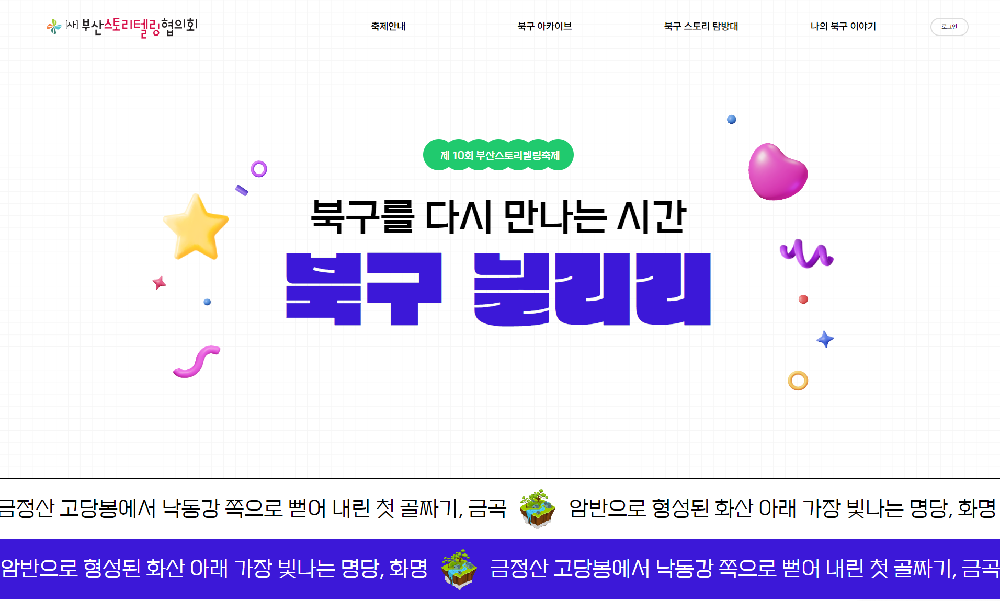
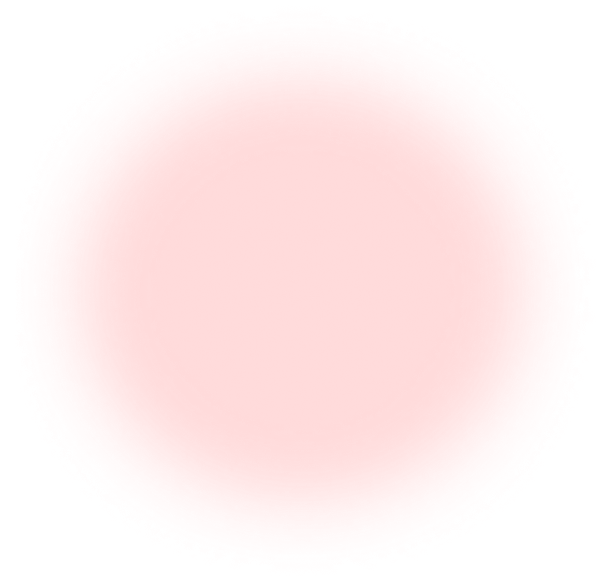
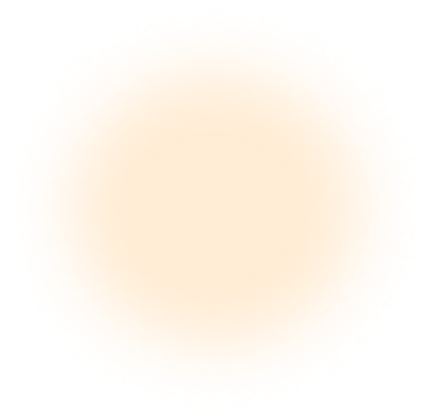
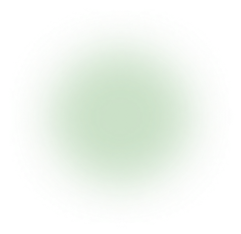

 북구 스토리텔링 협의회 팀을 구성하여 모든 팀원이 함께 "부산 스토리텔링 협의회"의 페이지를 구현하고, 적극적인 의사소통과 문제해결을 통해 웹 개발에 필요한 기술들을 향상시킨다.   
목표 다양한 이미지를 활용하여 디자인을 구현할 수 있다. 팀원들 간의 활발한 소통으로 원활한 의견 교환이 이루어 질 수 있게 한다. 미디어 쿼리를 통한 반응형 웹 작업에 익숙해 질 수 있도록 한다. 작업 순서 레퍼런스 페이지 조사 / 선정 업무 분담 pc버전, 모바일 버전 홈페이지 마크업 작업 홈페이지 분석(요구사항, 필요기능 등) 홈페이지 구현에 필요한 소스들과 assets 폴더 정리 퍼블리싱 가이드 작성 각자 맡은 부분의 페이지 구현 작업 멀티 페이지 구현 발표 준비 / 프로젝트 완료 보고서 작성 사용 기술 HTML5 CSS3 JaveScript GitHub Figma 디자인 가이드 키워드 색상 폰트 퍼블리싱 가이드 해상도 기준 : PC = 1200px, 모바일 우선 작업 문서에서 각 영역은 각주와 한 줄 띄어쓰기를 이용해 정리 페이지 내 각 영역은 역할에 따라 head, section, footer 태그를 사용